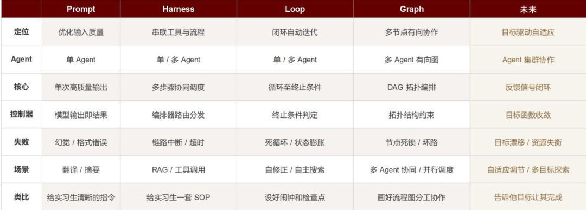
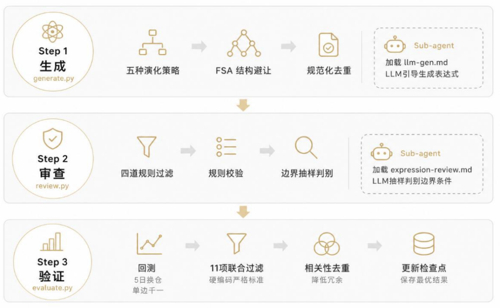
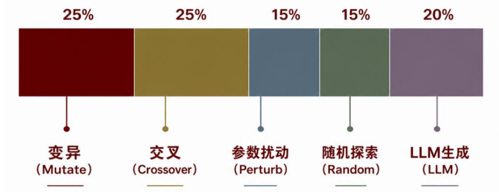
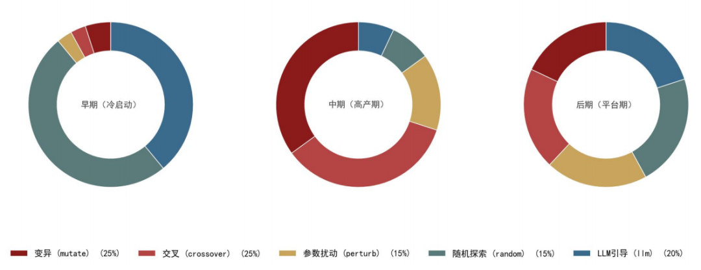
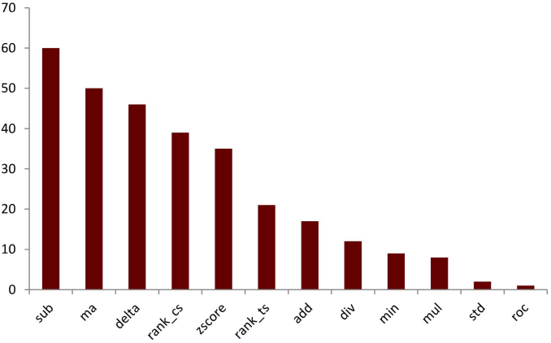
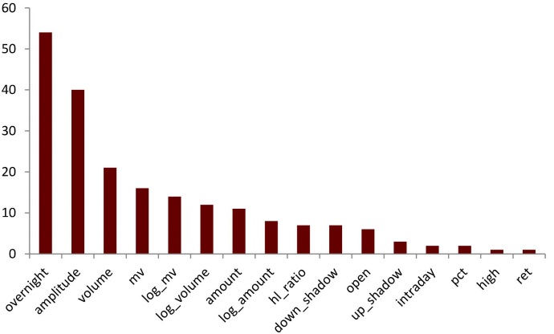
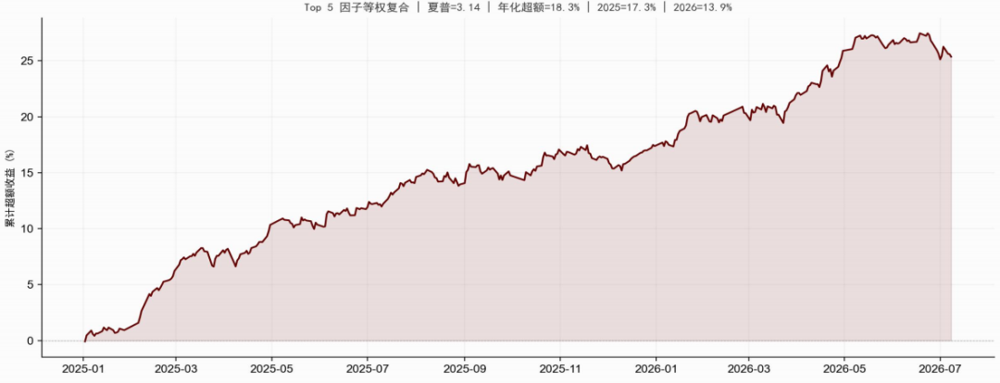
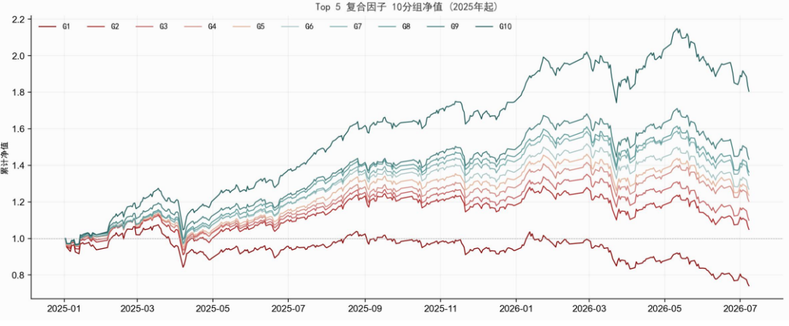

中金研究
量化研究中的因子挖掘包含大量流程性工作，包括提出假设、执行回测、筛选审查等。本报告将这一流程封装为基于大模型Loop机制的自动化价量因子发现系统。本文框架对比传统方法主要优势在于：1.大模型可以评判因子的经济学含义避免找出无意义的统计因子；2.可以自定义因子优化方向而非只考虑单维度指标；3.更容易拓展到其他类型的因子挖掘任务例如另类和高频数据。
Abstract
摘要
Loop挖掘因子新框架
系统基于Loop engineering框架构建主要由loop命令承担定时调度，每5分钟触发一轮因子发现迭代；检查点文件记录已测试因子的哈希集合、入库因子的完整信息与迭代计数，任意时点中断均可从断点续跑，已完成的进度不会落空。
技能封装（Skill）将项目背景、算子字段定义、回测参数和工程约束固化为Skill模块，无需重复交代背景。子代理分离（Sub-agents）将生成与审查的LLM调用从编排脚本中独立出来，分别加载对应 Skill 执行机制引导生成和边界精判，与验证端的硬编码回测形成隔离，降低单一模型自我说服的风险。钩子机制（Hooks）在每轮迭代结束后自动输出因子库状态摘要。
五维演化自适应调整因子比例
因子生成通过五种操作按比例演化：变异（25%）替换表达式树中的叶子节点或子树，保留结构骨架同时引入新信号源；交叉（25%）交换两个父本因子的子树分支，产生混合结构；参数扰动（15%）在动量引导下微调窗口参数；随机探索（15%）受数据驱动特征分布引导；LLM生成（20%）按机制分类探索尚未覆盖的因子生成方向。
因子评估采用两套并行逻辑：优化侧，多项联合过滤条件从统计显著性、年度稳定性、风险调整收益、近期持续性和独立性来筛选，参数优化由加权最小二乘梯度估计配合动量平滑和自适应步长驱动；规避侧，失败因子表达式写入失败模式库，生成阶段自动排除，FSA[1]（频繁子树规避）定期抽象因子结构并统计频次，超过15%阈值的骨架被禁止复用，同结构参数变体上限有限，防止搜索陷入同质化。
因子具备高可解释性，复合因子年化超额收益达18.3%
实验从零因子冷启动，累计581轮迭代，测试超1万个候选因子，保留21大类69个独立因子。2025年和2026年的联合正向过滤是贯穿全程的主要瓶颈，约60%的被拒因子因某年超额不达标而落选。
结果表明，数据驱动特征分布和存活因子定向变异有效提升了搜索效率，FSA机制对结构趋同的抑制效果明显。最终保留的69个因子平均超额收益的夏普比率1.60，2025年以来平均年化超额11.7%，平均IC绝对值5.0%，信号源覆盖跳空溢价、波动率回归、盘中反转、量价背离等独立逻辑类型，因子间IC序列相关性均低于0.70。周度回测下振幅扩张与跳空溢价因子年化超额14.1%，超额夏普比率为2.64；Top 5因子等权复合超额夏普3.14，年化超额18.3%，2025年和2026年超额分别为17.3%和13.9%。
风险
本篇报告基于市场历史数据测试因子有效性，无法确保因子样本外的收益表现；模型与参数设定变化可能导致结论失效；大模型产生结果可能具有一定随机性。
Text
正文
Loop Engineering挖掘因子新框架
大模型在量化投资中的应用正经历从"单次交互"到"多智能体协作"的范式演进。Prompt Engineering 处于最底层，模型被当作一次性工具，输入指令、获得输出，质量完全取决于提示词的设计水平。Harness 在 Prompt 之上引入编排层，将多个工具和步骤串联为固定流水线，模型不再孤立运行，而是按预设流程协同工作。Loop 进一步赋予系统自主迭代能力，通过检查点持久化状态、终止条件控制循环、硬性闸门把关质量，使系统在无人值守时持续运行并自我校正。Graph 则将串行流水线升级为有向无环图，多个 Agent 节点按拓扑结构并行协作，每个节点加载专属 Skill 独立执行子任务，最终汇聚为统一输出。本项目当前处于 Loop 阶段，Graph 能力已在 Sub-agent 分支（生成与审查并行调用 LLM）中初步体现，后续可向全图编排演进。
Loop Engineering（循环工程）是大模型工程实践中新近形成的一种范式，由Anthropic Claude Code团队在工程实践中率先提出并推广。Loop Engineering对于以往的Prompt Engineering（提示词工程）的核心转变在于，不再追求把单句提示词写得更好，而是把一次性的提示词交互改造为“触发—执行—校验—记录”的自动化闭环，定时调度驱动模型持续迭代，硬性校验把控产出质量，状态文件在轮次之间传递进度。换言之，提示词工程关心单次输出的质量，Loop Engineering关心的是一套闭环系统能否在无人值守时依然稳定推进任务。
图表1：快速进化的大模型用法和机制对比

资料来源：中金公司研究部
因子生成三步循环框架
系统的核心是一条"生成—审查—验证"三步闭环流水线，整体架构如图表所示。生成环节负责供给候选，通过变异、交叉、扰动、随机探索和LLM机制引导五种策略产生新表达式；审查环节负责规则过滤与LLM精判，拦截无意义或越界表达式；验证环节负责回测、11项联合过滤与IC去重，达标因子入库并更新检查点。每轮迭代依次执行以上三步流程。在第一步和第二步我们使用了sub-agent的框架来执行生成和审查的步骤，但第三步验证步骤由于评判方式清晰，我们直接使用硬编码的模式，可以节省单次循环的时间。
图表2：整体因子构建流程图

资料来源：中金公司研究部
► 生成阶段，演化引擎根据因子库状态决定候选来源。冷启动时全部随机生成；因子库积累后，按预算分配切换为五种策略——变异（替换子树，25%）、交叉（交换子树，25%）、参数扰动（微调窗口，15%）、随机探索（15%）、LLM机制引导（20%）。频繁子树规避（FSA）定期扫描过度使用的结构骨架，超过15%阈值即禁止复用，迫使搜索向新方向扩展。
► 审查阶段，对候选表达式做规则过滤——外层截面算子自动退化、同质算子简化、跨量纲运算拒绝、最小复杂度门槛。随机抽样5个候选交由LLM精判，检查表达式边界条件是否合理。
► 验证阶段，在近600个交易日数据上计算因子值，以5日换仓频率进行单因子回测（单边千一成本），计算Spearman秩IC。通过11项联合过滤（|IC|>0.03、2025及2026年超额>0、2025年以来夏普>0.5、2026年夏普>0.5、Calmar>1.0、近9月及近12月超额>0、IC相关性<0.70），达标因子入库保存并更新检查点。
整个流程由检查点文件保障状态持久化，每轮迭代结束后以原子方式写入，避免中断导致状态损坏，存储已测试因子的哈希集合、已保存因子的完整信息（含IC序列快照和多维评分）、动量追踪器状态及迭代计数，任意环节中断后均可从断点恢复。
五维演化方式自适应调整因子方向
因子搜索本质上是一个参数优化问题：在模板定义的参数空间中，找到使预测能力最大化的参数组合。随机搜索实现简单，但每个候选的生成彼此独立，历史信息被白白浪费，已经测试过的参数组合及其表现，本可以提示下一步该往哪个方向走。梯度下降的思想正是把搜索从无方向的随机试探，转变为有方向、可积累的优化过程：根据历史数据估计参数对预测能力的影响方向，沿有利方向调整参数，并用动量机制平滑噪声、避免方向震荡。
五维演化轨迹支持因子多样性
冷启动阶段，所有候选因子随机生成，确保初始搜索的广度。当因子库积累了一定数量的高分因子后，系统根据因子库状态切换到演化模式，按概率选择以下5种操作，同时我们也可以以现有因子池为基础直接进入演化模式。
图表3：生成层因子变异预算分配

资料来源：中金公司研究部
► 交叉：系统从因子库中选取两个高分因子，收集各自的全部子树，再随机选定替换点，将第一个因子的某个子树换成第二个因子的对应部分。交叉的意义在于融合不同来源的结构特征，例如把一个因子的趋势捕捉部分与另一个因子的波动刻画部分组装成新的复合信号。
► 变异：从已入库因子中直接选取父本，以 50% 概率执行变异或交叉。与从因子库选取种子不同，入库因子已通过 11 项筛选，结构质量更高，在其附近搜索成功率显著优于宽泛的因子库采样。
► 参数扰动：是四类操作中较为保守的一种，表达式结构完全不变，仅对时间序列算子的窗口参数做微调，调整方向由动量追踪器给出，步长随梯度强度自适应调整，属于在已验证结构上的精细调优。
► 随机探索：保留这部分纯随机生成，是为了防止搜索过早收敛到局部最优，让系统始终对全新结构保持开放。
► LLM引导探索：统计当前因子库已覆盖的机制方向，优先从尚未覆盖的机制族中选取研究原型，形成自然语言假设后生成表达式，确保搜索持续向新方向扩展。当前定义 13 个机制族，分类如图表所示。
机制引导探索与随机探索都可以生成全新的表达式，但二者承担的功能不同。随机探索强调不受既有假设约束的广度；机制引导探索则利用金融机制约束生成范围，提高候选表达式与研究意图的一致性。两种操作同时保留，可以避免系统在“纯随机组合”和“人工先验限制”之间走向任一极端。
当已有因子附近仍能持续产生高分候选时，系统提高变异和参数扰动的比例；当高IC候选大量触发相关性去重时，提高随机探索和机制引导探索的比例，以扩大结构和信号来源；当某一机制族长期缺少候选时，机制引导探索优先补充该方向；当多个机制均已获得一定覆盖但入库率持续下降时，则适当提高交叉比例，尝试组合不同信号来源。其实本质是在探索（exploration）与利用（exploitation）之间进行动态平衡。
因子具备高可解释性，2026年超额达19.9%
迭代过程显示因子发掘方向具有自适应能力
迭代过程呈现明显的自适应能力，系统自动完成了三次方向调整。早期（前 50 轮）以随机探索为主，仅入库 4 个因子。数据驱动特征分布在此期间自动发挥作用，这是第一次自适应，系统从均匀随机转向有偏好的搜索。50-400 轮为平稳积累期，变异和交叉在 overnight 骨架上持续产出，这是第二次自适应，系统识别出富矿脉并持续开采，最终在 401-450 轮集中爆发。450 轮后 FSA 频繁子树规避机制触发，overnight 骨架因超过 15% 阈值被冻结，入库率骤降。系统被迫转向新方向down_shadow 出现率从 4% 升至 17%，hl_ratio 从 9% 升至 17%。这是第三次自适应，搜索方向自动从跳空溢价向价格结构、影线支撑和交互算子扩散。三次转向均无需人工设定规则，由数据驱动分布、FSA 和动态预算三者自动完成。
整个因子迭代实验持续3整天，累计测试 16,939 个候选因子，保留69个独立因子，成功率 0.41%。在因子10分组后，使用因子得分前10%作为多头持仓，计算相对全市场等权收益率的超额收益，交易费用设置为单边千一。实验在A股全市场股票上进行，回测数据覆盖最近600个交易日（2024年初至2026年7月），IC计算使用5日换仓频率的Spearman秩相关系数。每次迭代生成100个候选因子，经审查过滤后进入完整回测验证。Loop定时任务每5分钟触发一轮，截至目前已累计执行超过581轮自动迭代。因子结构平均深度3.6层，以4层为主（34个），窗口参数集中在51-100天区间（52次），其次为151-200天（23次）和≤50天（21次），呈现明显的"中长窗口偏好"。
因子生成迭代过程
因子生成采用五种变异操作的混合策略，默认预算分配为：变异（mutate，替换子树）25%、交叉（crossover，交换子树）25%、参数扰动（perturb，微调窗口）15%、随机探索（random，纯随机生成）15%、LLM机制引导（llm，假设驱动生成）20%。不同因子生成阶段有效因子的来源存在明显差异。冷启动期以随机探索和大模型引导生成为主，中期以变异和交叉为主，中后期各项来源趋于均匀，以默认预算比例为中枢波动。
图表4：因子来源在不同阶段的差异

资料来源：中金公司研究部
搜索过程呈现明显的阶段性和自适应调整特征：
前 50 轮为冷启动，全部候选随机生成，达标率极低，仅入库 4 个因子。数据驱动特征分布在此期间自动发挥作用，overnight 权重提升至 4 倍，amplitude 和 down_shadow 提升至 2 倍，窗口参数均值从 80 天偏移至 106 天。
50-400 轮为平稳探索期，每 50 轮入库 6-11 个因子，变异和交叉在 overnight 骨架上逐步积累，形成了以 sub(ma(overnight,N),...)和和sub(delta(ma(overnight,N),M),...) 为核心的结构家族。
401-450 轮为集中爆发期，50 轮内入库 51 个因子（占全部 69 个的 74%），系统在 overnight 结构家族上密集产出高夏普变体，FSA 此时尚未触发冻结。
450 轮后FSA 频繁子树规避机制介入，overnight 骨架因超过 15% 阈值被列入禁止列表，入库率骤降至每 50 轮 3-6 个，搜索结果向 amplitude、down_shadow、volume 等信号源扩散。
入选因子意义明确，复合因子多头收益显著
在最终的69个保留因子中overnight占比85%，amplitude占63%，分布尚不均衡，这与搜索时间较短直接相关。实际有效搜索仅约3天，共计581轮迭代，系统在有限时间内自然优先收敛到信息比率最高的信号源，overnight类因子在A股2025-2026年环境下夏普比率和稳定性均显著优于其他类型，因此被率先密集发掘。amplitude和down_shadow作为次优信号紧随其后，而趋势动量、反转、边界突破等8个机制方向尚处于探索初期，随着搜索时间延长，这些方向的因子占比有望逐步上升。
算子层面，sub（减法）以94%的出现率位居首位，有效因子多数依赖差值结构捕捉背离信号。ma（移动平均）和delta（差分）分别出现于81%和71%，构成核心时序算子。mul（乘法）和div（除法）出现频率较低，分别为6%和13%，skew（偏度）和roc（变化率）在现有因子中较少出现，偏度在5日预测周期上区分能力有限，变化率在多重过滤下通过率偏低。量价类字段（volume、amount、mv）多以rank_cs排名形式作为辅助变量出现，独立作为主信号的因子较少。
图表5：有效因子算子次数统计

注：统计时间为2025-01-01至2026-07-08
资料来源：Wind，中金公司研究部
图表6：有效因子字段次数统计

注：统计时间为2025-01-01至2026-07-08
资料来源：Wind，中金公司研究部
从因子表现来看，21个大类代表因子整体表现稳健，平均年化超额夏普1.63，平均年化超额14.5%，中位数夏普1.70。跳空溢价类因子占据主导（21/28），平均夏普1.80、超额14.2%，其中跳空趋势背离（夏普2.74，超额15.5%）和振幅扩张与跳空溢价（夏普2.64，超额14.1%）表现最为突出，均为费后收益。振幅类和比率乘积类因子各5个，平均夏普分别为1.11和1.25，超额较高但波动更大，个别因子如波动扩张支撑比超额达49.7%但夏普仅1.10，属于高收益高风险类型。整体因子库以低回撤、稳健收益的跳空溢价类因子为基石，振幅波动和比率结构类因子为补充，尚处于初期探索阶段。
其中多个因子表现较为亮眼，且经济学意义明显，涉及多种指标的交互。如周度回测下振幅扩张与跳空溢价因子2025年和2026年的超额收益费后分别为11.6%和19.9%，总超额夏普比率为2.64。该因子衡量跳空溢价稳定趋势与振幅变化速度的背离：正的因子值意味着跳空标准化长期均值高于振幅差分，即个股持续高开但日内波动并未同步放大，说明隔夜溢价有基本面支撑而非投机性波动驱动，这种高开有质的状态对后续方向有更强的预示能力。
我们将夏普比率排名前五的大类代表因子按截面zscore标准化后等权合成，四个因子原始方向为负，合成时已做方向修正。复合因子IC为+0.081，夏普比率3.14，年化超额18.3%，2025年和2026年超额分别为17.3%和13.9%。复合夏普3.14优于任一单因子（最高2.74），2026年超额13.9%也显著高于多数单因子，说明等权复合通过平滑个体因子的特异性噪声，在保持收益水平的同时降低了波动，在风格切换年份尤为受益。
图表7：top 5 复合因子表现

注：统计时间为2025-01-01至2026-07-08
资料来源：Wind，中金公司研究部
图表8：top 5 复合因子分组预测净值

注：统计时间为2025-01-01至2026-07-08
资料来源：Wind，中金公司研究部
本项目基于Loop Engineering范式，构建了一套全自动化的A股量价因子发现系统。系统以14种算子和13个派生字段为表达词汇，通过变异、交叉、参数扰动、随机探索和LLM机制引导五种策略生成候选因子，经审查规则过滤和athena回测验证后入库。在581轮迭代中，累计测试16,939个候选因子，保留69个独立因子，成功率0.41%。28个大类代表因子平均夏普1.63，平均年化超额14.5%（费后），其中跳空趋势背离因子夏普达2.74。Top 5因子等权复合夏普3.14，年化超额18.3%，2025年和2026年超额分别为17.3%和13.9%。搜索过程呈现明显的自适应特征，数据驱动分布自动提升有效字段权重，FSA频繁子树规避机制在结构饱和后强制搜索转向新方向，全程无需人工干预。
但目前来看当前系统仍存在几方面局限。其一，信号源高度集中，overnight字段出现率85%，趋势动量、反转、边界突破等8个机制方向尚处于探索初期，因子库结构多样性不足。其二，搜索时间仅3天，FSA介入后（450轮后）入库率骤降，新方向（影线、价格结构）的因子夏普均值仅0.92，远低于核心家族的1.68，说明系统尚未在替代信号源上建立起同等质量的搜索能力，或者到这一步仍需要不少时间。其三，数据字段限于日频价量，未引入基本面、另类数据等新信息源，搜索空间的天花板受限于输入维度。
但同时本文框架相比传统因子挖掘方法同样具有一定优势：其一，Loop Engineering将单次LLM调用升级为"生成—审查—验证"的自动化闭环，区别于简单的for循环调用LLM，后者每轮独立、无状态传递、无失败学习，而Loop通过检查点持久化、FSA失败模式规避和动态预算调整，使每轮搜索方向受历史经验约束，搜索效率随迭代累积提升。其二，11项联合过滤和五维评分体系从预测能力、稳定性、多样性、换手率和过拟合风险多维度优化因子质量，而非仅依赖单一IC指标，避免了Goodhart定律下指标被反向拟合的风险。其三，Skill和Sub-agent的模块化设计将数据字段、算子库、机制族和回测参数固化为可复用模块，扩展至另类数据、高频数据或其他资产类别的因子挖掘任务时，只需修改对应Skill文件，无需重构生成和验证流程。
Source
文章来源
本文摘自：2026年8月3日已经发布的《大模型系列（7）：基于Loop Engineering的自动化因子发现引擎》
郑文才 分析员 SAC 执证编号：S0080523110003 SFC CE Ref：BTF578
周萧潇 分析员 SAC 执证编号：S0080521010006 SFC CE Ref：BRA090
刘均伟 分析员 SAC 执证编号：S0080520120002 SFC CE Ref：BQR365
Legal Disclaimer
法律声明